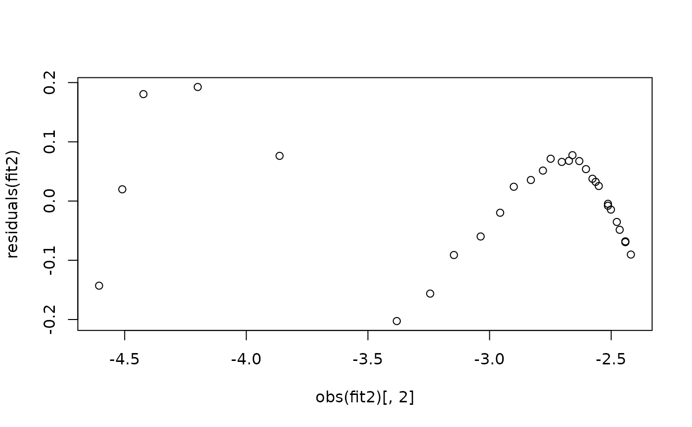

Functions to access the results of fitted growthrate objects: summary,
coef, rsquared, deviance, residuals,
df.residual, obs, results.
Usage
# S4 method for class 'growthrates_fit'
rsquared(object, ...)
# S4 method for class 'growthrates_fit'
obs(object, ...)
# S4 method for class 'growthrates_fit'
coef(object, extended = FALSE, ...)
# S4 method for class 'easylinear_fit'
coef(object, ...)
# S4 method for class 'smooth.spline_fit'
coef(object, extended = FALSE, ...)
# S4 method for class 'growthrates_fit'
deviance(object, ...)
# S4 method for class 'growthrates_fit'
summary(object, ...)
# S4 method for class 'nonlinear_fit'
summary(object, cov = TRUE, ...)
# S4 method for class 'growthrates_fit'
residuals(object, ...)
# S4 method for class 'growthrates_fit'
df.residual(object, ...)
# S4 method for class 'smooth.spline_fit'
summary(object, cov = TRUE, ...)
# S4 method for class 'smooth.spline_fit'
df.residual(object, ...)
# S4 method for class 'smooth.spline_fit'
deviance(object, ...)
# S4 method for class 'multiple_fits'
coef(object, ...)
# S4 method for class 'multiple_fits'
rsquared(object, ...)
# S4 method for class 'multiple_fits'
deviance(object, ...)
# S4 method for class 'multiple_fits'
results(object, ...)
# S4 method for class 'multiple_easylinear_fits'
results(object, ...)
# S4 method for class 'multiple_fits'
summary(object, ...)
# S4 method for class 'multiple_fits'
residuals(object, ...)Examples
data(bactgrowth)
splitted.data <- multisplit(bactgrowth, c("strain", "conc", "replicate"))
## get table from single experiment
dat <- splitted.data[[10]]
fit1 <- fit_spline(dat$time, dat$value, spar=0.5)
coef(fit1)
#> y0 mumax
#> 0.007061752 0.284758023
summary(fit1)
#> Fitted smoothing spline:
#> Call:
#> smooth.spline(x = time, y = ylog, spar = 0.5)
#>
#> Smoothing Parameter spar= 0.5 lambda= 0.0001077001
#> Equivalent Degrees of Freedom (Df): 9.337058
#> Penalized Criterion (RSS): 0.05991467
#> GCV: 0.003957856
#>
#> Parameter values of exponential growth curve:
#> Maximum growth at x= 4.042719 , y= 0.02232908
#> y0 = 0.007061752
#> mumax = 0.284758
#>
#> r2 of log transformed data= 0.995436
## derive start parameters from spline fit
p <- c(coef(fit1), K = max(dat$value))
fit2 <- fit_growthmodel(grow_logistic, p=p, time=dat$time, y=dat$value, transform="log")
coef(fit2)
#> y0 mumax K
#> 0.008668589 0.293698939 0.081412765
rsquared(fit2)
#> [1] 0.9820697
deviance(fit2)
#> [1] 0.2353843
summary(fit2)
#>
#> Parameters:
#> Estimate Std. Error t value Pr(>|t|)
#> y0 0.008669 0.000499 17.37 <2e-16 ***
#> mumax 0.293699 0.015222 19.30 <2e-16 ***
#> K 0.081413 0.002036 39.99 <2e-16 ***
#> ---
#> Signif. codes: 0 ‘***’ 0.001 ‘**’ 0.01 ‘*’ 0.05 ‘.’ 0.1 ‘ ’ 1
#>
#> Residual standard error: 0.09169 on 28 degrees of freedom
#>
#> Parameter correlation:
#> y0 mumax K
#> y0 1.0000 -0.7522 0.2312
#> mumax -0.7522 1.0000 -0.5005
#> K 0.2312 -0.5005 1.0000
plot(residuals(fit2) ~ obs(fit2)[,2])
